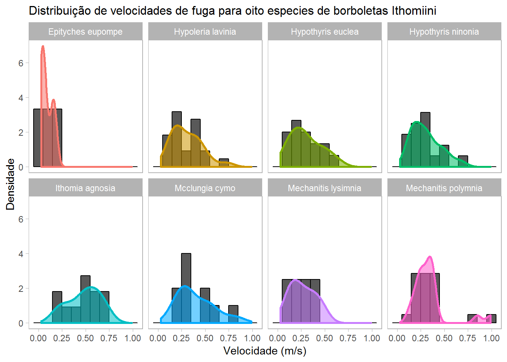
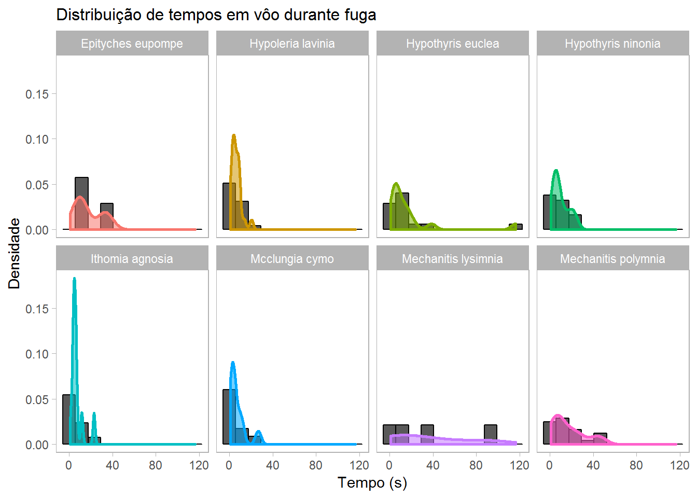

Performance locomotora de borboletas Ithomiini
Carlos Candia-Gallardo & Karine Duarte
A performance locomotora de borboletas Ithomiini muda ao longo das estações do ano? Para responder essa pergunta estamos medindo a capacidade de locomoção de oito espécies.
Medindo capacidade de locomoção. Apresentamos aqui a distribuição de cinco medidas de performance locomotora. As seguintes respostas foram medidas após um estímulo único (tentativa de captura): 1) Velocidade média empreendida na fuga até o primeiro pouso, 2)Distância total percorrida durante a fuga, 3) Tempo em vôo durante a fuga, 4) Distância em relação ao observador no momento de início da fuga e 5) Altura máxima durante a fuga. Dados de oito espécies agrupadas.
Oito espécies agrupadas
Performance locomotora por espécie
A que velocidade fogem diferentes espécies de borboletas ao tentarem ser capturadas? Quanto voam, que distância percorrem?
É possível que durante o inverno, quando algumas espécies de borboletas Ithomiini parecem entrar em um tipo de hibernação (diapausa), sua capacidade de locomoção ficaria reduzida. Insetos em diapausa geralmente mudam ou reduzem sua mobilidade, tal como as borboletas monarca durante sua famosa migração de outono e posterior hibernação de inverno. Acreditamos que encontrar ou não diferenças na locomoção ao longo das fases do ano pode nos dizer se as borboletas Ithomiini realmente “hibernam” no inverno, quando se agregam aos milhares no interior úmido de florestas.

